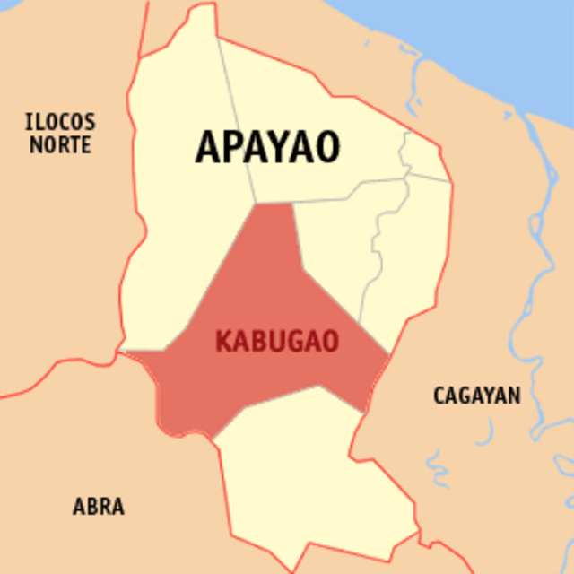
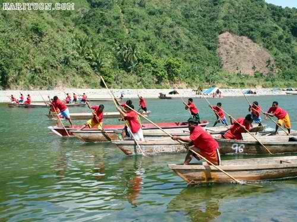

<!DOCTYPE html>
<html>
<meta charset="UTF-8">
<meta http-equiv="X-UA-Compatible" content="IE=edge">
<meta name="viewport" content="width=device-width, initial-scale= 1.0">
<link rel="stylesheet" href="Apayao.css">
<title>YCordillera</title>  </html>
<header class="header">
  <a href="#" class="logo">YCORDILLERA AK</a>
  <nav class="navbar">
    <a href="Jacob_Website.html">Home</a>
    <a href="Jacob_Websiteabout.html" onclick="return confirm('Info about the website not the creator')" >About </a>
    <a href="Jacob_Websitecontacts.html">Contact</a>
    <button class="button"><a href="WebsiteSignin.html">Sign in</a></button>
    <button class="button"><a href="WebsiteSignup.html">Sign up</a></button>
  </nav>
</header>
<body>
  
  <p class="homedesc1">
    Apayao (Ilocano: Probinsia ti Apayao; Tagalog: Lalawigan ng Apayao) is a landlocked province in the 
    Philippines in the Cordillera Administrative Region in Luzon. Kabugao serves as its capital. The 
    provincial capitol and its associated offices are located at the New Government Center in Luna.
  </p>
  <p class="homedesc2">
    Apayao is devoted to agricultural production, particularly food and industrial crops such as palay, corn, 
    coffee, root crops and vegetables. Fruits produced include lanzones, citrus, bananas and pineapples, durian, 
    santol, rambutan, coconut and mangosteen.
  </p>
</body>
<body>
  
  <p class="homedesc3">What do you call Apayao people?
    Isnag people. The Isnag people (also referred to as Isneg and Apayao) are an 
    Austronesian ethnic group native to Apayao province in the Philippines' Cordillera Administrative Region.
     Their native language is Isneg (also called Isnag), although most Isnag also speak Ilocano.
  </p>
  <p class="homedesc4">
   The culture of Apayao
   The Apayao Cordillerans possess a rich cultural heritage. Their language, music, and dance form the core of their identity. 
   Through oral traditions, traditional instruments, and expressive dance, they preserve their history, 
   celebrate nature, honor ancestors, and inspire others to value indigenous cultures.
  </p>
  <p class="homedesc5">
    Apayao. apa'yaw, a word in various Cordilleran languages meaning "overtaking," in reference to the 
    swift-flowing river that drains the mountainous terrain inhabited by the Isneg ethnic group.
    From cascading waterfalls to scenic hikes, this destination has something for everyone. One of the must-see places is the Peñarrubia River, 
    surrounded by towering limestone cliffs, and home to the Marag Valley  where visitors 
    can witness the rich culture of local tribes.

</body>
<footer>
  jacobivanfranzrandall@gmail.com . All rights Reserved
</footer>